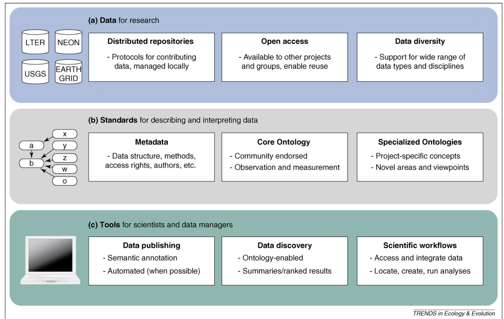

Chapter 1 Why ‘EcoInformatics’?
Portions of the following introduction were adapted from Michener & Jones 2012, Trends in Ecology & Evolution ’Ecoinformatics: supporting ecology as a data-intensive science
Ecology is increasingly becoming a data-intensive science, relying on massive amounts of data collected by both remote-sensing platforms and sensor networks embedded in the environment. New observatory networks, such as the US National Ecological Observatory Network (NEON), provide research platforms that enable scientists to examine phenomena across diverse ecosystem types through access to thousands of sensors collecting diverse environmental observations. These networks spatially and temporaly overlap with a number of other networks and infrastructures ranging from remote sensing, to citizen science, and so on.
It has been argued that data-intensive science represents the fourth scientific paradigm following the empirical (i.e. description of natural phenomena), theoretical (e.g. modeling and generalization) and computational (e.g. simulation) scientific approaches, and comprises an approach for unifying theory, experimentation and simulation.
Ecologists increasingly address questions at broader scales that have both scientific and societal relevance. For example, the 40 top priorities for science that can inform conservation and management policy in the USA rely principally on a sound foundation of ecological research, and the ability to scale knowledge and inter-connect data.

Continental-scale patterns and dynamics result from climate and people as broad-scale drivers interacting with finer-scale vectors that redistribute materials within and among linked terrestrial and aquatic systems. Climate and land-use change interact with patterns and processes at multiple, finer scales (blue arrows). (a) These drivers can influence broad-scale patterns directly, and these constraints may act to overwhelm heterogeneity and processes at (b) mesoscales and at (c) the finer scale of local sites. Broad-scale drivers can also exert an indirect impact on broad-scale patterns through their interactions with disturbances, including (d) the spread of invasive species, (e) pattern–process relationships at meso-scales, or (f) at finer scales within a site. Connectivity imparted by the transfer of materials occurs both at (g) the meso-scale and at (h) finer scales within sites where terrestrial and aquatic systems are connected. These dynamics at fine scales can propagate to influence larger spatial extents (red arrows). Feedbacks occur throughout the system. The term “drivers” refers to both forcing functions that are part of the system and to external drivers. Peters et al., 2008
Ecology is also affected by changes that are occurring throughout science as a whole.
In particular, scientists, professional societies and research sponsors are recognizing the value of data as a product of the scientific enterprise and placing increased emphasis on data stewardship, data sharing, openness and supporting study repeatability.

Data on ecological and environmental systems are (A) acquired, checked for quality, documented using an acquisition workflow, and then both the raw and derived data products are versioned and deposited in the DataONE federated data archive (red dashed arrows). Researchers discover and access data from the federation and then (B) integrate and process the data in an analysis workflow, resulting in derived data products, visualizations, and scholarly papers that are in turn archived in the data federation (red dashed arrows). Other researchers directly cite any of the versioned data, workflows, and visualizations that are archived in the DataONE federation. Richman et al., 2011
The changes that are occurring in ecology create challenges with respect to acquiring, managing and analyzing the large volumes of data that are collected by scientists worldwide.
One challenge that is particularly daunting lies in dealing with the scope of ecology and the enormous variability in scales that is encountered, spanning microbial community dynamics, communities of organisms inhabiting a single plant or square meter, and ecological processes occurring at the scale of the continent and biosphere. The diversity in scales studied and the ways in which studies are carried out results in large numbers of small, idiosyncratic data sets that accumulate from the thousands of scientists that collect relevant biological, ecological and environmental data.

A proposed high-level architecture for ecological and environmental data management is shown consisting of three primary levels. Data stored within distributed data repositories (a) is mediated by standard metadata and ontologies (b) to power software tools used by scientists and data managers (c). Software applications use community-endorsed ontologies and metadata standards from the middle level to provide tools that are more effective for publishing, querying, integrating and analyzing data. Ontologies are separated into framework ontologies and domain-specific extensions, enabling contributions from multiple research groups, disciplines and individuals. Cross-disciplinary data are maintained in local repositories, but made accessible to the broader research community through distributed systems based on shared, open protocols (such as Metacat). Example repositories include the LTER network, National Ecological Observatory Network, United States Geographical Survey and SEEK’s EarthGrid. Madin et al. 2008,
Ecoinformatics is a framework that enables scientists to generate new knowledge through innovative tools and approaches for:
- discovering,
- managing,
- integrating,
- analyzing,
- visualizing,
- and preserving
relevant biological, environmental, and socioeconomic data and information. Many ecoinformatics solutions have been developed over the past decade, increasing scientists’ efficiency and supporting faster and easier data discovery, integration and analysis; however, many challenges remain, especially in relation to installing ecoinformatics practices into mainstream research and education.
And that, course participants, is why we are here.
1.1 The Framework of this Course
Over the duration of this course we will survey a wide array of observation platforms and networks and build hands-on experience with the framework of Ecoinformatics. For coherance we will cover the following overarching themes:
- Each network’s mission and design
- Each network’s spatial design
- e.g. opprtunistic vs. planned, citizen science vs. orbital sensors
- The types of data that stream from each network
- e.g. sensors, derived products, metadata
- How to access that data
- e.g. APIs, landing pages, r packages etc.
- Opportunities to interact with or contribute to each network
- e.g. RFP’s coming down the pipeline, internships, and post-doctoral scholar programs.
At the conclusion of each network’s section you will be asked to write a 1-page summary reviewing the above framework for each network, and highlight how it potentially aligns with your own research. These series of 1-page summaries will then culminate into a final presentation where you propose to derive your own data product for your own research touching upon multiple networks and accounting for differences in spatial footprints, frequency of observations, and important data cross-walks.
1.2 EcoInformatics Tools
The purpose of this course is to train you in key ecoinformatics practices.
Therefore, as an Ecoinformatician you need to be able to:
- Pull data from Application Programming Interfaces (APIs)
- More on this in Chapter 2
Organize and document your code and data
- Version control your code to avoid disaster and make it reproducible
- For you, your collaborators, and/or the wider community
Push your code up to public-facing repositories
Pull others code from public repositories.
More thoughts on the benefits and power of reproducibility can be found here
To be successful, both in this course and in your careers you will need these skills. This is why they are a requirement for this course. If you are already using these skills on a daily basis, fantastic! If you don’t feel that you have mastery in the workflows listed above we have placed lesson links throughout this chapter so that you can build these skills and be successful in this course.
1.3 Pre-Course Skills & Setup
For the purpose of this course we will largely be using the following tools to access, pull, and explore data:
- R & Rstudio
- Git, GitHub, & Atom.io
- Markdown & Rmarkdown
As such we will need to install and/or update these tools on your personal computer before our first day of class. While we chose R for this course, nearly all of the packages and data are fully available and transferable to Python or other languages. If you’d like to brush up on your R skills I highly recommend Data Carpentry Boot camp’s free R for Reproducible Scientific Analysis course.
1.3.1 Installing or Updating R
Please check your version of R. You will need R 3.6.0+
How to check your version in R or RStudio if you already have it:
> version
_
platform x86_64-apple-darwin15.6.0
arch x86_64
os darwin15.6.0
system x86_64, darwin15.6.0
status
major 3
minor 5.1
year 2018
month 07
day 02
svn rev 74947
language R
version.string R version 3.5.1 (2018-07-02)
nickname Feather Spray If you don’t already have R or need to update it do so here.
1.3.2 Windows R/RStudio Setup
After you have downloaded R, run the .exe file that was just downloaded Go to the RStudio Download page Under Installers select RStudio X.XX.XXX - e.g. Windows Vista/7/8/10 Double click the file to install it Once R and RStudio are installed, click to open RStudio. If you don’t get any error messages you are set. If there is an error message, you will need to re-install the program.
1.3.3 Mac R/RStudio Setup
After you have downloaded R, double click on the file that was downloaded and R will install Go to the RStudio Download page Under Installers select RStudio 1.2.1135 - Mac OS X XX.X (64-bit) to download it. Once it’s downloaded, double click the file to install it. Once R and RStudio are installed, click to open RStudio. If you don’t get any error messages you are set. If there is an error message, you will need to re-install the program.
1.4 Linux R/RStudio Setup
R is available through most Linux package managers. You can download the binary files for your distribution from CRAN. Or you can use your package manager. e.g. for Debian/Ubuntu
run sudo apt-get install r-baseand for Fedora
run sudo yum install RTo install RStudio, go to the RStudio Download page Under Installers select the version for your distribution. Once it’s downloaded, double click the file to install it Once R and RStudio are installed, click to open RStudio. If you don’t get any error messages you are set. If there is an error message, you will need to re-install the program.
1.4.1 Install basic packages for this course
You can run the following script to make sure all the required packages are properly installed on your computer.
# list of required packages
list.of.packages <- c(
'data.table',
'tidyverse',
'jsonlite',
'jpeg',
'png',
'raster',
'rgdal',
'rmarkdown',
'knitr'
)
# identify new (not installed) packages
new.packages <- list.of.packages[!(list.of.packages %in% installed.packages()[,"Package"])]
# install new (not installed) packages
if(length(new.packages))
install.packages(new.packages,
repos='http://cran.rstudio.com/')
# load all of the required libraries
sapply(list.of.packages, library, character.only = T)Note: On some operating systems, you may need to install the Geospatial Data Abstraction Library (GDAL). More information about GDAL can be found from here.
1.5 Installing and Setting up Git & Github on Your Machine
For this course you will need: 1. Git installed on your local machine 2. Very basic bash scripting 3. A linked GitHub account 4. To link RStudio to git via RStudio or Atom.io
As we will be using these skills constantly, they are a pre-requisite for this course. If you don’t yet have these skills it’s okay! You can learn everything that you need to know via the following freely available resources:
If you are learning these skills from scratch I estimate that you will need to devote ~4-6 hours to get set up and comfortable with the various workflows. Also remember that I have code office hours every week and that Stack Exchange is your friend.
1.6 Installing Atom
Atom.io is a powerful and useful text editor for the following reasons:
It is language agnostic
It fully integrates with git and github + You can use it to push/pull/resolve conflicts and write code all in one space.
1.7 Linking RStudio to Git
Happy Git with R has a fantastic tutorial to help you link Rstudio-Git-Github on your local machine and push/pull from or to public repositories.
1.8 How we will be Conducting this Course
If you find a broken link or error in this course text submit an issue on the course github repository.
At the end of each chapter you will find a set of Exercises. At the end of the assigned chapter you will be expected to submit via BBLearn two files:
An RMarkdown file with the naming convention: LASTNAME_COURSECODE_Section#.Rmd, and
A knitted .PDF with the same naming convention: LASTNAME_COURSECODE_Section#.pdf
To generate these files you have two options:
Click on the pencil and pad logo in the top of this text, copy the exercise section code, and drop it into your own .Rmd.
Git clone our course Github Repository, navigate to the ’_Exercises’ folder, and use that .Rmd as a template.
Note: Exercises submitted in any other format, or those missing questions will not be graded
To generate your .PDF to upload, in your RMarkdown file simply push the ‘Knit’ button at the top of your document.
1.9 Exercises:
- Navigate to our course github
git forkour repo onto your own personal github account.git clonethe repo onto your own personal machine in a place that is functional and not temporary (e.g. not your downloads folder).
#hints
cd `Your/Path/Here'
git clone 'repo HTTPS'- Add 2-3 sentences introducing yourself in the
_Course-participantsfolder. For example:
***
Hi, I'm Dr. Katharyn Duffy. I have a Ph.D in Earth Science from Northern Arizona University. Over the past two years I've worked as an open-source software engineer in the PhenoCam lab, and now I'm the coding and lab support for your course. I really look forward to working with all of you!
***- Submit a
pull requestto add your introduction to our course participants folder.
#hints
git add ...
git commit ...
git status....
git push --set-upstream
git remote -v
git remote add upstream...Note: You may complete these either on the command line or via a program like Atom.io. If you haven’t yet made commits to a remote repository or submitted pull requests please reference the resources listed above.